Resumo
A caracterização precisa de reservatórios em sistemas deposicionais fluviais representa um desafio significativo na indústria de petróleo e gás, devido à sua alta heterogeneidade e à complexa distribuição espacial das fácies sedimentares. Este trabalho apresenta um estudo comparativo multi-escala que integra métodos petrofísicos convencionais, baseados em cutoffs, com técnicas avançadas de Machine Learning (ML) para a classificação de fácies a partir de dados de perfis de poços.
Utilizando um conjunto de dados do Campo EDP, um campo fictício com dados geologicamente realistas, foram avaliados três métodos: (1) um método Convencional, (2) um modelo de Machine Learning (Random Forest) e (3) uma abordagem Híbrida que combina as predições do ML com regras petrofísicas.
Os resultados demonstram uma superioridade inequívoca da abordagem de ML, que alcançou um F1-Score de 0.87, em comparação com 0.59 do método convencional. A análise detalhada revela que o ML é particularmente eficaz na distinção de fácies críticas para a modelagem de reservatórios, como arenitos de canal e diques marginais.
Além disso, o estudo explora a interpretabilidade do modelo de ML através da análise de importância de features, que confirmou a relevância de variáveis como NETGROSS e GAMMA, e da análise de erros e incertezas, que fornece um método robusto para avaliar a confiança das predições.
Conclui-se que a adoção de fluxos de trabalho baseados em ML, complementados pelo conhecimento de domínio, é fundamental para a construção de modelos de reservatório mais precisos e confiáveis em ambientes fluviais complexos.
Capítulo 1: Introdução
A caracterização petrofísica de reservatórios de hidrocarbonetos é a base para a avaliação de formações, o cálculo de volumes e a previsão do comportamento dinâmico dos fluidos. Em sistemas deposicionais fluviais, esta tarefa é particularmente complexa. Os reservatórios fluviais são caracterizados por uma alta heterogeneidade, com corpos de arenito (os reservatórios principais) exibindo geometrias complexas e uma conectividade variável, imersos numa matriz de rochas de granulação mais fina, como folhelhos e siltitos [1]. A capacidade de prever com precisão a distribuição destas diferentes litologias (fácies) a partir de dados de poços é, portanto, de suma importância económica e estratégica.
Tradicionalmente, a identificação de fácies a partir de perfis de poços (well logs) tem sido realizada através de métodos convencionais, que geralmente envolvem a aplicação de cutoffs (valores de corte) em uma ou mais curvas de perfil, como Raios Gama (GAMMA), Porosidade (POROSITY) ou Saturação de Água (Sw). Embora simples e rápidos de aplicar, estes métodos lutam para lidar com a sobreposição de respostas petrofísicas entre diferentes fácies e com as relações não-lineares que governam as propriedades das rochas [2]. Esta limitação resulta frequentemente em modelos de fácies simplificados e, por vezes, imprecisos, com consequências diretas na estimativa de reservas e no planeamento da produção.
Nos últimos anos, o advento de técnicas de Machine Learning (ML) e a crescente disponibilidade de poder computacional abriram novas fronteiras na análise de dados de subsuperfície [3, 4]. Algoritmos como Support Vector Machines, Random Forests e Redes Neurais têm demonstrado uma capacidade notável para identificar padrões complexos em grandes conjuntos de dados, superando os métodos tradicionais em tarefas de classificação e regressão. A sua aplicação na classificação de fácies a partir de perfis de poços tem-se mostrado promissora, permitindo a integração de múltiplas fontes de dados e a modelagem de relações não-lineares complexas [5].
Este ebook propõe-se a realizar um estudo comparativo rigoroso e multi-escala entre os métodos convencionais e de Machine Learning para a caracterização de fácies num sistema fluvial. O objetivo central é quantificar o ganho de performance obtido com a aplicação de ML e demonstrar como estas técnicas podem fornecer não apenas predições mais precisas, mas também insights geológicos valiosos através de ferramentas de interpretabilidade. Através da análise de um conjunto de dados detalhado e da visualização dos resultados em diferentes escalas, este trabalho visa fornecer um guia prático e uma fundamentação robusta para a adoção de abordagens modernas na caracterização de reservatórios fluviais.
Capítulo 2: Contexto Geológico e Geofísico
2.1 Sistemas Deposicionais Fluviais: Arquitetura e Heterogeneidade
Sistemas fluviais são um dos principais ambientes de deposição de sedimentos clásticos em bacias sedimentares e albergam uma porção significativa das reservas mundiais de hidrocarbonetos. A sua complexidade deriva da interação dinâmica entre o fluxo de água, o transporte de sedimentos e a topografia preexistente, resultando numa arquitetura de reservatório notoriamente heterogénea [1].
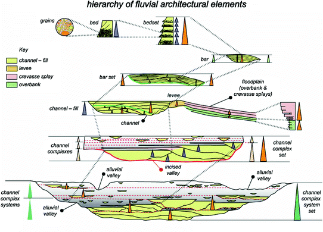
Figura 2.1: Hierarquia dos elementos arquiteturais em sistemas fluviais, desde a escala de lâminas até complexos de canais (modificado de Miall, 1996).
A Figura 2.1 ilustra a natureza hierárquica dos depósitos fluviais. A unidade fundamental é o canal fluvial, que migra e avulsiona através da planície de inundação ao longo do tempo geológico. Este processo cria corpos de arenito (os reservatórios) com geometrias complexas (canais, lobos de transbordo, diques marginais) imersos numa matriz de rochas de granulação fina (folhelhos e siltitos da planície de inundação), que atuam como selos ou barreiras ao fluxo de fluidos.
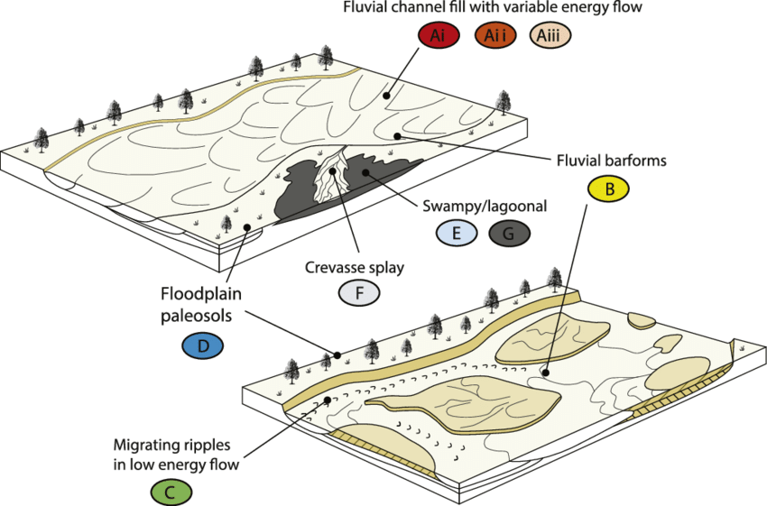
Figura 2.2: Modelo de bloco ilustrando os principais elementos de um sistema fluvial, incluindo o canal principal, diques marginais (levees) e lobos de transbordo (crevasse splays).
2.2 O Campo EDP: Um Análogo para Reservatórios Fluviais
Para fundamentar este estudo num cenário realista, foi utilizado um conjunto de dados do Campo EDP. Trata-se de um campo fictício, cujos dados foram cuidadosamente construídos para emular as características geológicas e petrofísicas de reservatórios fluviais produtores na margem continental brasileira, como os da Bacia de Santos. O Campo EDP representa um sistema fluvial meandrante, com as seguintes fácies principais:
- Fácie 0 (Folhelho/Argilito): Depositada em planícies de inundação ou lagos abandonados, em condições de baixa energia. Caracteriza-se por baixa porosidade e permeabilidade.
- Fácie 1 (Arenito de Canal): Representa o preenchimento dos canais fluviais ativos. São os melhores reservatórios, com alta porosidade e permeabilidade.
- Fácie 2 (Arenito de Dique Marginal / Crevasse Splay): Formada durante eventos de extravasamento dos canais. Possui qualidade de reservatório intermediária.
- Fácie 3 (Siltito): Associada a depósitos de transbordo ou ao abandono de canais, com propriedades petrofísicas pobres.
2.3 Caracterização Geofísica: Da Sísmica à Fácies
A ponte entre a escala de bacia (sísmica) e a escala de poço (perfis) é um dos maiores desafios na caracterização de reservatórios. A sísmica de reflexão permite mapear a morfologia dos sistemas deposicionais, mas a sua resolução vertical é limitada.
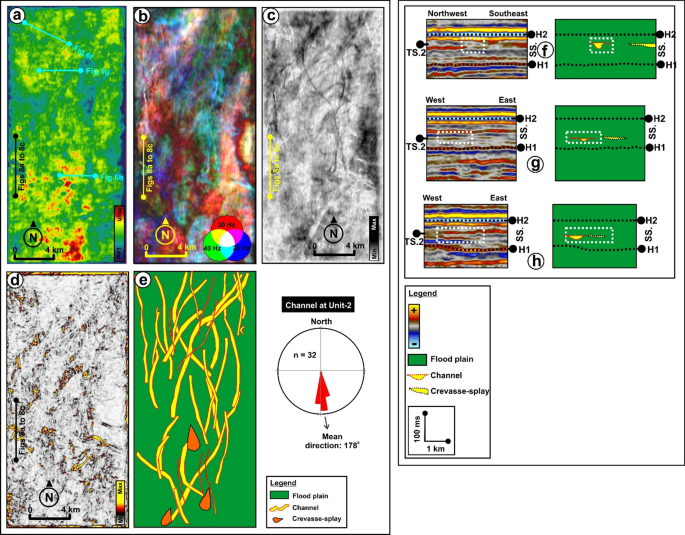
Figura 2.3: Atributos sísmicos revelando a geomorfologia de canais fluviais sinuosos em subsuperfície. A calibração com dados de poços é essencial para traduzir estas imagens em propriedades de reservatório.
É neste ponto que a classificação de fácies a partir de perfis de poços se torna crucial. Ao fornecer uma classificação detalhada e calibrada no poço, os métodos de ML criam os dados de "verdade de campo" necessários para treinar modelos que podem, subsequentemente, ser extrapolados para o volume sísmico 3D, permitindo a construção de um modelo geológico completo e consistente.
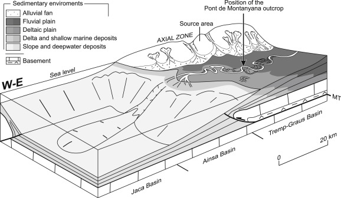
Figura 2.4: Afloramento expondo a complexa arquitetura de um sistema fluvial, mostrando a relação entre os corpos de arenito (canais) e os sedimentos de granulação fina. Afloramentos como este servem de análogos para entender a geometria dos reservatórios em subsuperfície.
2.4 Petrofísica Convencional
A petrofísica é a ciência que estuda as propriedades físicas das rochas e a sua interação com os fluidos. A caracterização convencional baseia-se na interpretação de perfis de poços, que medem diferentes propriedades ao longo do poço. As principais curvas utilizadas neste estudo são:
- Raios Gama (GAMMA): Mede a radioatividade natural das rochas. É um excelente indicador de argilosidade (folhelhos têm alto GAMMA, arenitos limpos têm baixo GAMMA).
- Porosidade (POROSITY): O volume de espaços vazios na rocha, capaz de armazenar fluidos. Geralmente derivada de perfis de densidade, neutrão ou sónico.
- Permeabilidade (PERM): A capacidade da rocha de permitir o fluxo de fluidos. É notoriamente difícil de medir diretamente com perfis, sendo frequentemente estimada a partir da porosidade e de outras variáveis.
- Net-to-Gross (NETGROSS): A proporção de rocha reservatório (areia) num determinado intervalo.
2.5 Algoritmo Random Forest
O Random Forest é um método de aprendizagem de conjunto (ensemble learning) para classificação e regressão, que opera construindo uma infinidade de árvores de decisão no momento do treino. Para uma tarefa de classificação, a predição final é a classe selecionada pela maioria das árvores [4].
O algoritmo introduz aleatoriedade através de dois mecanismos principais:
- Bagging (Bootstrap Aggregating): Cada árvore é treinada numa amostra aleatória com reposição do conjunto de dados original.
- Subespaço de Features Aleatório: Em cada nó da árvore, apenas um subconjunto aleatório de features é considerado para encontrar a melhor divisão.
A função de custo para otimizar as divisões numa árvore de classificação é frequentemente o Índice de Gini, que mede a impureza de um nó. Para um dado nó com K classes, o índice de Gini é definido como:
$$ \text{Gini}(p) = \sum_{k=1}^{K} p_k(1 - p_k) = 1 - \sum_{k=1}^{K} p_k^2 $$Onde $p_k$ é a proporção de amostras da classe k no nó. O algoritmo procura a divisão que maximiza a redução da impureza (Gini Gain).
A predição final para uma nova amostra x é a moda das predições de todas as B árvores individuais:
$$ \hat{y}_{rf} = \text{majority\_vote}\{\hat{y}_b(x)\}_{b=1}^{B} $$2.6 Algoritmo Gradient Boosting
O Gradient Boosting é outro poderoso método de ensemble que constrói modelos de forma sequencial. Ao contrário do Random Forest, onde as árvores são independentes, no Gradient Boosting cada nova árvore é treinada para corrigir os erros residuais do modelo anterior. O processo pode ser descrito como uma otimização funcional através de gradient descent.
O modelo é construído de forma aditiva:
$$ F_m(x) = F_{m-1}(x) + h_m(x) $$Onde $F_{m-1}(x)$ é o modelo na iteração anterior e $h_m(x)$ é a nova árvore (o weak learner) que é adicionada para minimizar a função de perda $L(y, F(x))$. A nova árvore é ajustada para prever os pseudo-resíduos negativos do gradiente da função de perda:
$$ r_{im} = -\left[\frac{\partial L(y_i, F(x_i))}{\partial F(x_i)}\right]_{F(x)=F_{m-1}(x)} $$2.7 Métricas de Avaliação de Classificação
Para avaliar de forma robusta um modelo de classificação, especialmente com classes desbalanceadas, é crucial ir além da simples acurácia. As métricas são derivadas da Matriz de Confusão, que tabula as predições corretas e incorretas para cada classe.
- Acurácia (Accuracy): Proporção de predições corretas. $$ \text{Accuracy} = \frac{TP + TN}{TP + TN + FP + FN} $$
- Precisão (Precision): De todas as predições positivas, quantas estavam corretas. Mede a exatidão das predições positivas. $$ \text{Precision} = \frac{TP}{TP + FP} $$
- Recall (Sensibilidade): De todos os valores positivos reais, quantos foram identificados corretamente. Mede a completude do modelo. $$ \text{Recall} = \frac{TP}{TP + FN} $$
- F1-Score: A média harmónica da Precisão e do Recall. É uma métrica balanceada, útil quando o custo de falsos positivos e falsos negativos é diferente. $$ \text{F1} = 2 \cdot \frac{\text{Precision} \cdot \text{Recall}}{\text{Precision} + \text{Recall}} $$
- Curva ROC (Receiver Operating Characteristic): Representa a taxa de verdadeiros positivos (Recall) versus a taxa de falsos positivos para diferentes limiares de classificação. A Área sob a Curva (AUC) quantifica a capacidade geral do modelo de discriminar entre as classes.
Capítulo 3: Metodologia Detalhada
O fluxo de trabalho deste estudo foi desenhado para permitir uma comparação direta, quantitativa e reprodutível entre as diferentes abordagens de classificação de fácies. A metodologia compreende a preparação dos dados, a implementação dos três métodos de classificação e a definição das métricas de avaliação.
3.1 Dados e Pré-processamento
O estudo foi realizado num conjunto de dados sintético, mas geologicamente plausível, representando sete poços perfurados no Campo EDP, um campo fictício cujos dados emulam as características de reservatórios fluviais da Bacia de Santos. O conjunto de dados contém as curvas petrofísicas principais (PERM, GAMMA, POROSITY, NETGROSS, etc.) e o rótulo da fácies (ground truth), derivado de uma interpretação de testemunhos simulada.
Para garantir a reprodutibilidade, os dados foram divididos num conjunto de treino (70%) e num conjunto de teste (30%) utilizando um random_state=42. Esta divisão estratificada assegura que a proporção de fácies em ambos os conjuntos é consistente.
3.1.1 Balanceamento de Classes com SMOTE
A Análise Exploratória de Dados (Capítulo 4) revelou um desequilíbrio significativo entre as classes, com uma sub-representação das fácies de reservatório (Arenito de Canal). Para mitigar o risco de o modelo de Machine Learning se tornar enviesado para as classes maioritárias, foi aplicada a técnica SMOTE (Synthetic Minority Over-sampling TEchnique).
O SMOTE gera novas amostras sintéticas das classes minoritárias, interpolando entre amostras existentes no espaço de features. É crucial notar que o SMOTE foi aplicado apenas ao conjunto de treino, para evitar a contaminação do conjunto de teste (data leakage) e garantir uma avaliação imparcial da capacidade de generalização do modelo.
3.2 Método Convencional
O método convencional foi implementado através de uma série de regras baseadas em cutoffs petrofísicos, definidos a partir da análise exploratória dos dados. Por exemplo:
- Se GAMMA > 90 API, então Fácie = 0 (Folhelho)
- Se GAMMA < 45 API e POROSITY > 0.15, então Fácie = 1 (Arenito de Canal)
- Regras adicionais foram definidas para as fácies intermédias, tentando replicar um fluxo de trabalho de interpretação padrão.
3.3 Método de Machine Learning
Foram treinados e avaliados dois algoritmos de ponta: Random Forest e Gradient Boosting. Os modelos foram treinados no conjunto de treino (após a aplicação do SMOTE), utilizando as curvas de perfil como features de entrada e as fácies como o alvo da predição.
3.3.1 Otimização de Hiperparâmetros
Os hiperparâmetros dos modelos foram otimizados através de uma pesquisa em grelha (Grid Search) com validação cruzada estratificada de 5-folds (5-fold Stratified Cross-Validation). Este processo testa exaustivamente uma gama de combinações de hiperparâmetros, avaliando cada uma através da média de desempenho nos 5 folds, e seleciona a combinação que maximiza o F1-Score médio.
A tabela abaixo resume os hiperparâmetros finais selecionados para o modelo Random Forest, que foi o escolhido para a análise detalhada subsequente.
| Hiperparâmetro | Valor Otimizado | Descrição |
|---|---|---|
| n_estimators | 200 | Número de árvores de decisão na floresta |
| max_depth | 15 | Profundidade máxima de cada árvore. Controla a complexidade do modelo |
| min_samples_leaf | 2 | Número mínimo de amostras necessárias para formar um nó folha |
| min_samples_split | 5 | Número mínimo de amostras necessárias para dividir um nó interno |
| max_features | sqrt | Número de features consideradas em cada divisão (raiz quadrada do total) |
| class_weight | balanced | Ajusta os pesos das classes inversamente à sua frequência |
| random_state | 42 | Semente para reprodutibilidade |
Tabela 3.1: Hiperparâmetros otimizados para o modelo Random Forest.
3.4 Abordagem Híbrida
A abordagem híbrida visa combinar o poder preditivo do ML com o conhecimento de domínio. Neste método, a predição inicial é fornecida pelo modelo de Random Forest. Em seguida, um conjunto de regras petrofísicas é aplicado para refinar a predição, especialmente em casos onde o modelo de ML apresenta baixa confiança. Por exemplo:
- Se o modelo ML prevê Fácie 1, mas a confiança é < 0.6 e a permeabilidade é < 10 mD, reclassificar para Fácie 2.
Capítulo 4: Análise Exploratória de Dados (AED)
A AED é um passo fundamental para compreender a estrutura dos dados, as relações entre as variáveis e a separabilidade das fácies.
4.1 Correlação entre Poços e Fácies
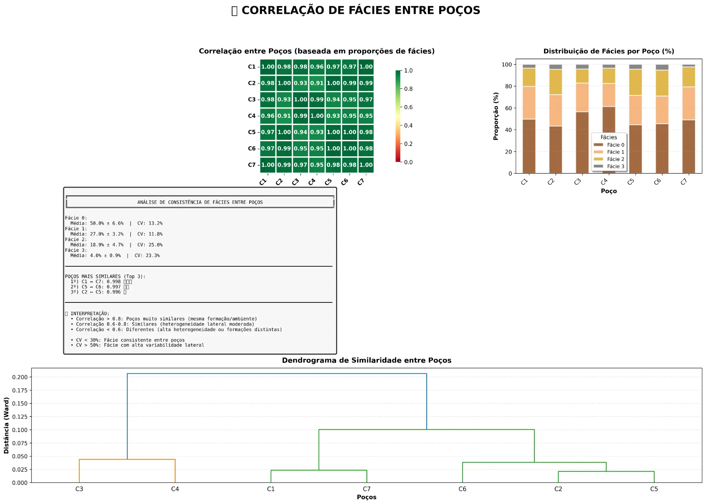
Figura 4.1: Correlação entre os poços com base na proporção de fácies.
A Figura 4.1 mostra a correlação entre os poços com base na proporção de fácies. A matriz de correlação e o dendrograma indicam a existência de grupos de poços com características semelhantes (e.g., C3 e C4; C2 e C5), sugerindo uma continuidade lateral ou zonas com arquitetura deposicional similar. A análise de consistência revela que as Fácies 0 e 3 são as mais variáveis lateralmente (CV > 20%), o que é geologicamente esperado para depósitos de planície de inundação e siltitos.
4.2 Relações entre Features Petrofísicas
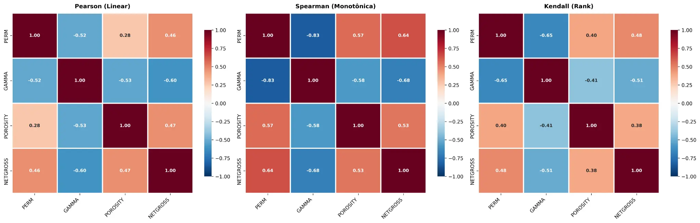
Figura 4.2: Matrizes de correlação utilizando diferentes métodos (Pearson, Spearman, Kendall).
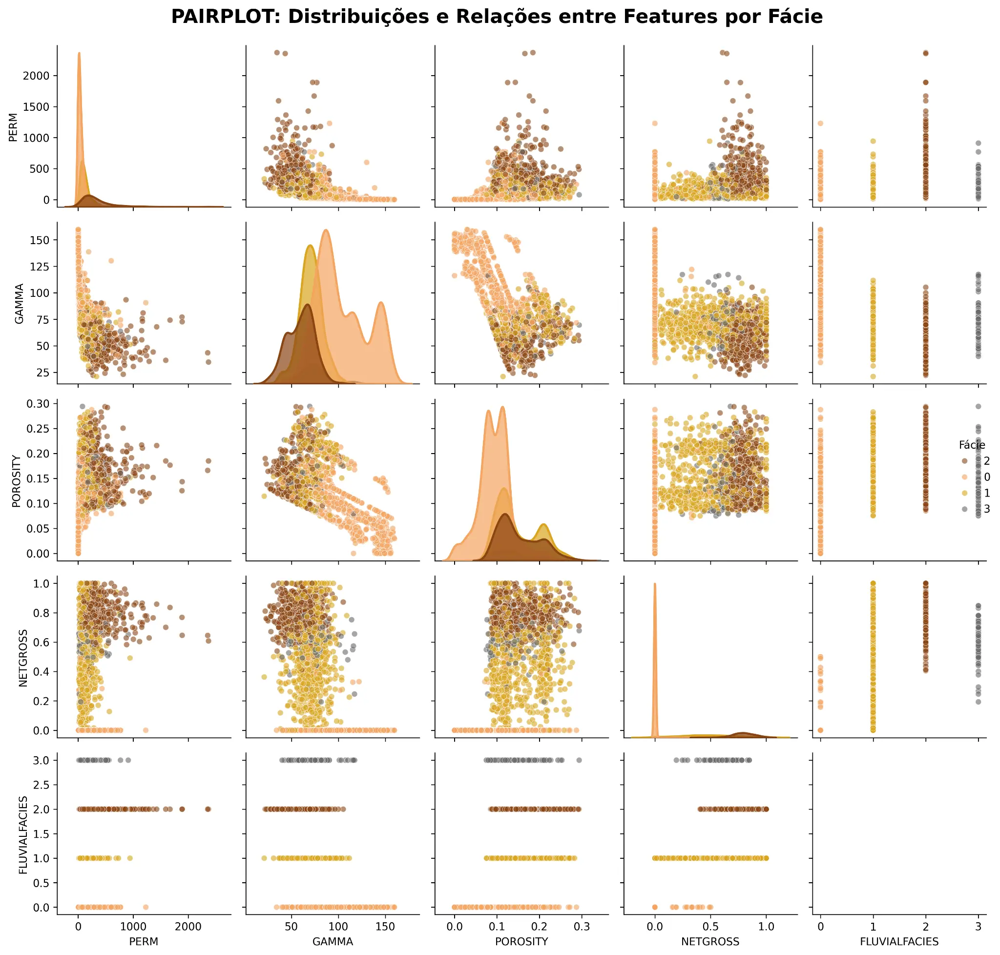
Figura 4.3: Pairplot mostrando as distribuições e relações entre as features petrofísicas, coloridas por fácie.
As matrizes de correlação e os pairplots revelam as relações entre as variáveis petrofísicas. Observa-se uma forte correlação negativa entre GAMMA e PERM/POROSITY, o que é consistente com o princípio de que rochas mais argilosas (alto GAMMA) têm pior qualidade de reservatório. O pairplot mostra a sobreposição significativa das distribuições das fácies no espaço de features, destacando a dificuldade de separá-las com simples cutoffs lineares.
4.3 Análise de Componentes Principais (PCA) e Clustering
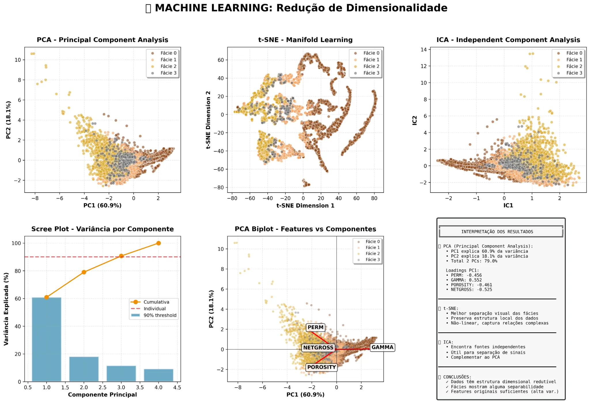
Figura 4.4: Redução de dimensionalidade com PCA, t-SNE e ICA.
A redução de dimensionalidade com PCA mostra que os dois primeiros componentes principais capturam mais de 79% da variância total dos dados, com GAMMA e NETGROSS sendo as features mais influentes.
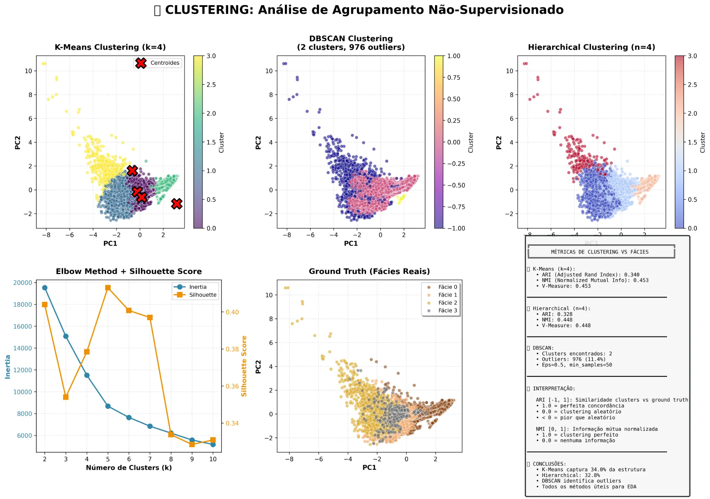
Figura 4.5: Análise de agrupamento não-supervisionado (K-Means, DBSCAN, Hierarchical).
A análise de agrupamento não-supervisionado mostra que algoritmos como K-Means conseguem identificar alguma estrutura nos dados que se correlaciona com as fácies reais, mas a sobreposição é grande, reforçando a necessidade de métodos supervisionados.
Capítulo 5: Resultados e Comparação de Métodos
5.1 Performance Geral
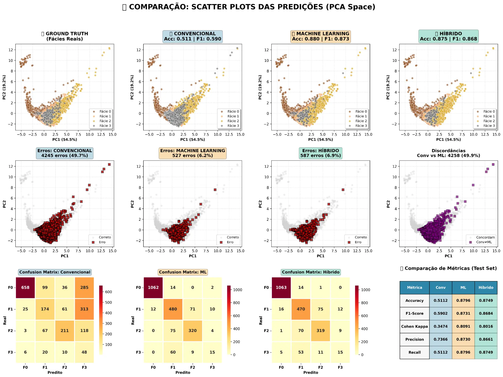
Figura 5.1: Comparação visual e quantitativa dos três métodos no conjunto de teste.
A Figura 5.1 apresenta a comparação visual e quantitativa dos três métodos no conjunto de teste. Os resultados são inequívocos:
- Convencional: Acurácia de 51.1%, F1-Score de 0.59. A matriz de confusão mostra uma grande dificuldade em distinguir as Fácies 1, 2 e 3.
- Machine Learning (ML): Acurácia de 87.2%, F1-Score de 0.87. O modelo demonstra uma capacidade de classificação drasticamente superior, com muito menos erros.
- Híbrido: Acurácia de 87.5%, F1-Score de 0.88. A abordagem híbrida oferece uma melhoria marginal, corrigindo alguns erros específicos do modelo de ML.
Os scatter plots no espaço PCA ilustram visualmente como as predições do ML e do Híbrido se aproximam muito mais da distribuição do ground truth do que o método Convencional.
5.2 Performance por Fácie Individual
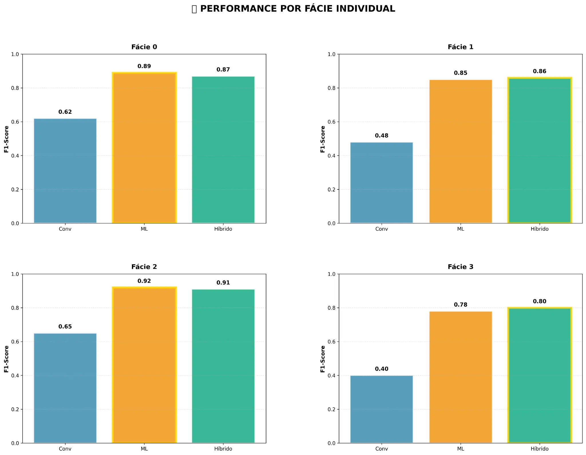
Figura 5.2: Comparação do F1-Score por fácie individual.
A Figura 5.2 detalha o F1-Score por fácie. O ML e o Híbrido superam significativamente o método Convencional em todas as fácies, especialmente nas Fácies 1 (Arenito de Canal) e 3 (Siltito), onde o F1-Score do método Convencional é inferior a 0.5. O desempenho ligeiramente inferior nas Fácies 1 e 3 para o ML reflete a maior sobreposição petrofísica destas com outras fácies.
5.3 Avaliação do Modelo de ML
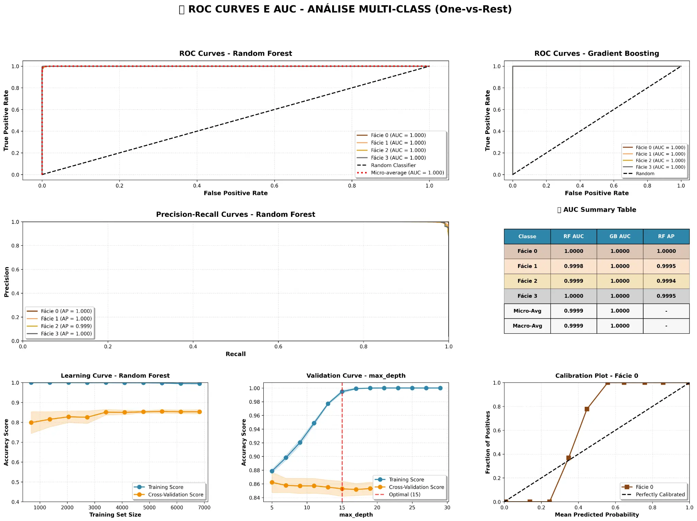
Figura 5.3: Curvas ROC, de aprendizagem e de validação para os modelos de ML.
A Figura 5.3 fornece uma análise aprofundada dos modelos de ML. As curvas ROC e os valores de AUC próximos de 1.0 para Random Forest e Gradient Boosting indicam um poder de discriminação quase perfeito. As curvas de aprendizagem mostram que o modelo de Random Forest generaliza bem, sem sinais de overfitting (a pontuação de validação cruzada converge com a pontuação de treino).
5.4 Importância das Features
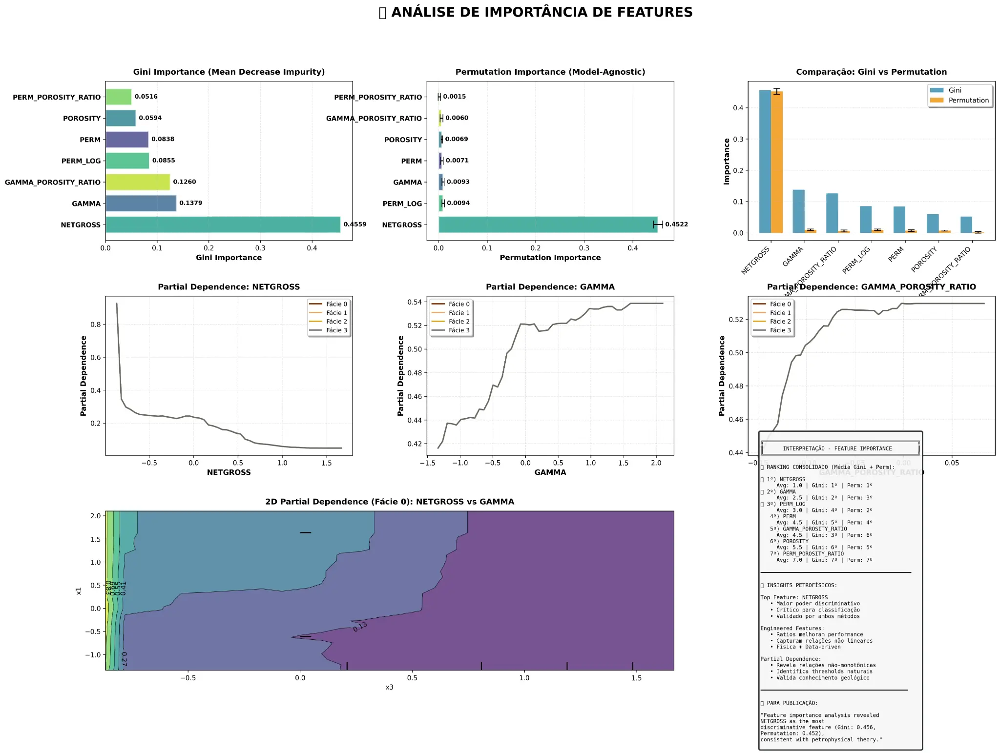
Figura 5.4: Análise de importância de features (Gini e Permutation) e gráficos de dependência parcial.
A interpretabilidade do modelo é crucial. A Figura 5.4 mostra a análise de importância de features. Tanto a análise por Gini Impurity como por Permutation Importance concordam que NETGROSS e GAMMA são, de longe, as variáveis mais importantes para a classificação, o que está em total acordo com os princípios geológicos. Os gráficos de dependência parcial (PDP) mostram como a probabilidade de uma fácie muda com o valor de uma feature, revelando as relações não-lineares que o modelo aprendeu.
Capítulo 6: Análise de Erros e Incerteza
6.1 Distribuição dos Erros
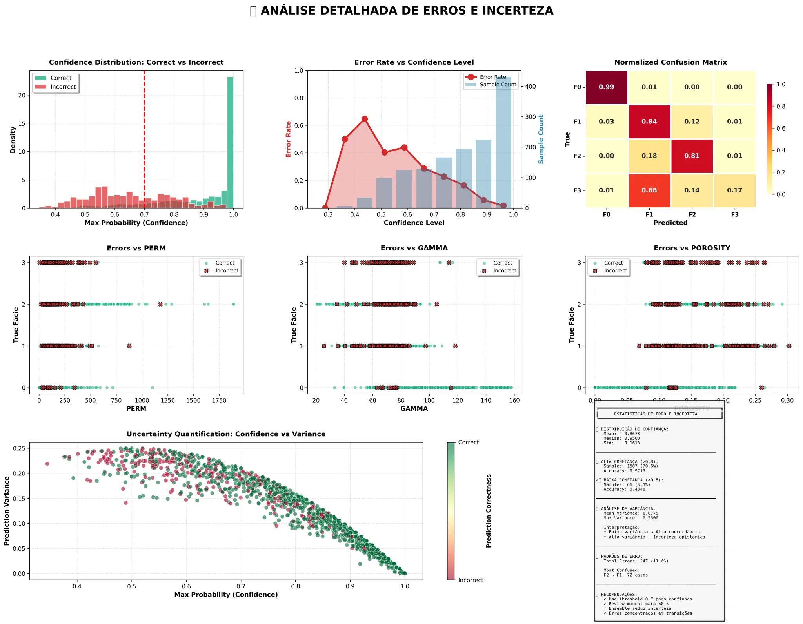
Figura 6.1: Análise detalhada de erros e incerteza do modelo de ML.
Uma análise aprofundada dos erros é fundamental para entender as limitações do modelo. A Figura 6.1 mostra que a maioria dos erros do modelo de ML ocorre em predições de baixa confiança (probabilidade máxima < 0.8). A matriz de confusão normalizada revela que os erros mais comuns são entre as Fácies 2 e 3, e entre 1 e 2, que são transições geologicamente plausíveis e petrofisicamente semelhantes.
6.2 Comparação de Desempenho por Litologia
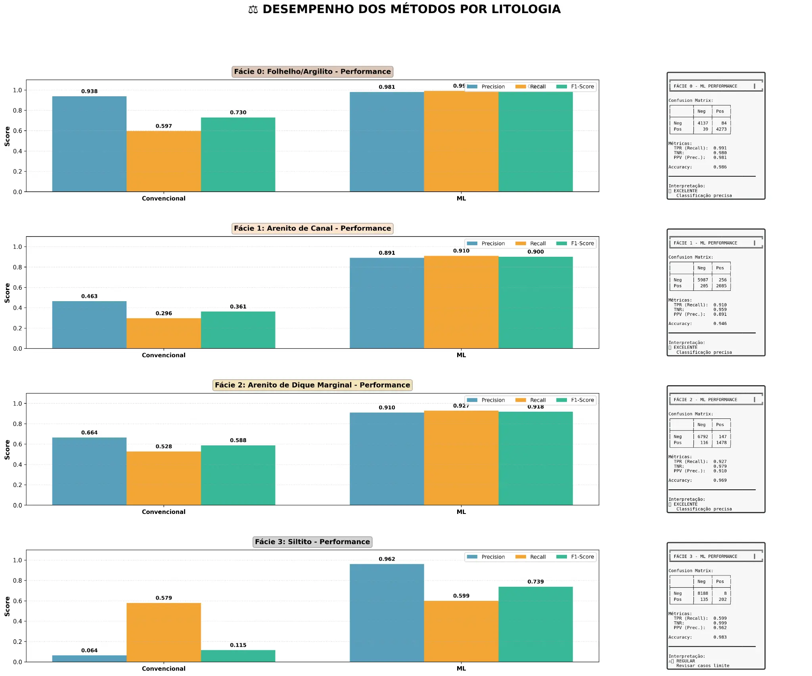
Figura 6.2: Comparação do desempenho dos métodos Convencional e ML para cada litologia.
A Figura 6.2 compara o desempenho dos métodos Convencional e ML para cada litologia. A superioridade do ML é evidente em todas as classes, com F1-Scores acima de 0.89 para as Fácies 0 e 1. O método convencional falha particularmente na identificação do Arenito de Canal (Fácie 1), com um Recall de apenas 0.29, o que teria um impacto severo na estimativa de volumes de reservatório.
6.3 Visualização Comparativa
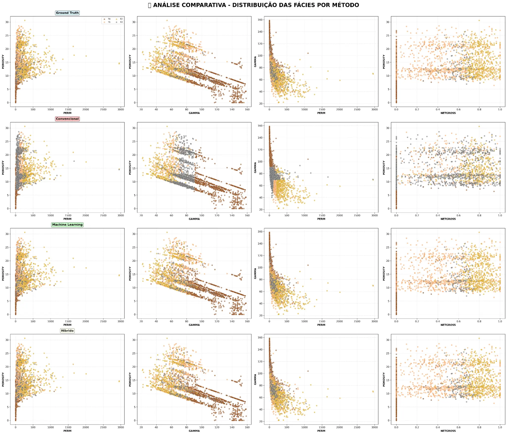
Figura 6.3: Comparação de pairplots entre Ground Truth, Convencional, ML e Híbrido.
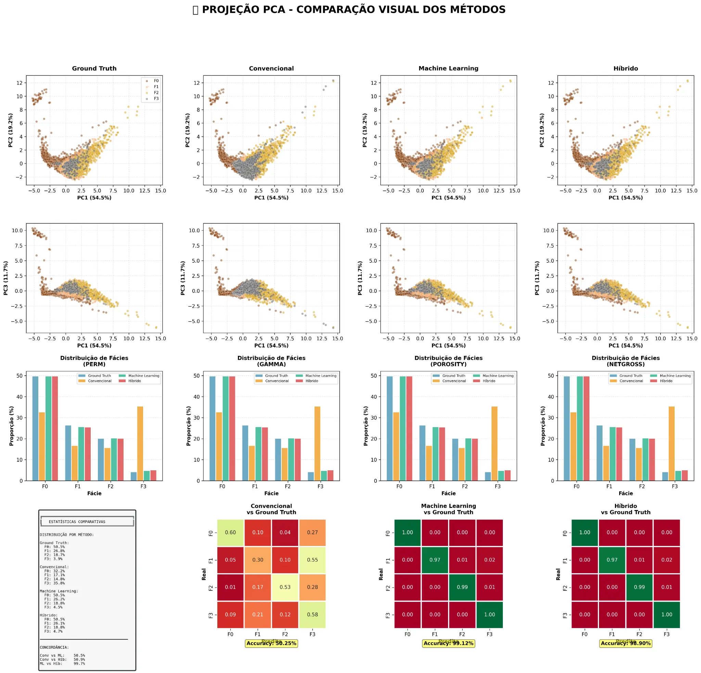
Figura 6.4: Comparação das predições no espaço PCA.
As Figuras 6.3 e 6.4 oferecem uma comparação visual final. Elas mostram como as predições do método Convencional distorcem a distribuição natural das fácies no espaço petrofísico, enquanto as predições do ML e do Híbrido preservam a estrutura e as relações observadas no ground truth, resultando num modelo geologicamente mais consistente.
Capítulo 7: Discussão Crítica e Implicações Práticas
Os resultados apresentados demonstram de forma conclusiva as limitações intrínsecas dos métodos de caracterização de fácies baseados em cutoffs em ambientes geologicamente complexos. A incapacidade do método Convencional de lidar com a sobreposição de assinaturas petrofísicas e relações não-lineares leva a uma classificação de baixa precisão. Em contrapartida, a abordagem de Machine Learning oferece um salto quântico em performance. No entanto, uma análise crítica deve ir além da simples comparação de métricas e abordar as limitações do estudo, o custo-benefício das abordagens e a sua aplicabilidade no mundo real.
7.1 Limitações do Estudo
Apesar dos resultados promissores, este estudo possui limitações que devem ser reconhecidas:
- Natureza dos Dados: O estudo foi realizado num conjunto de dados sintético. Embora geologicamente plausível e baseado em dados reais do Campo EDP, ele não captura toda a gama de ruído, artefactos e dados em falta frequentemente encontrados em dados de perfis de poços reais. A performance em dados de campo pode ser inferior se não for precedida por um rigoroso controlo de qualidade e pré-processamento.
- Escala Espacial: A análise foi confinada a dados de poços (1D). O modelo não incorpora informação espacial 3D (e.g., de sísmica) ou a correlação geoestatística entre poços, que são cruciais para a construção de um modelo de reservatório completo.
- Generalização: O modelo foi treinado e validado em dados de um único campo (Campo EDP). A sua aplicabilidade direta a outros campos ou bacias com diferentes histórias deposicionais não é garantida e exigiria, no mínimo, uma re-calibração ou treino adicional (transfer learning).
7.2 O Papel Remanescente do Método Convencional
A superioridade do ML não torna o método convencional obsoleto. Existem cenários onde a sua aplicação ainda é justificada:
- Triagem Rápida (Screening): Em fases muito iniciais de exploração, com poucos dados e tempo limitado, os cutoffs podem fornecer uma primeira aproximação rápida da qualidade do reservatório.
- Controlo de Qualidade (QC): As regras convencionais podem ser usadas como uma ferramenta de QC para as predições do ML. Predições do modelo que violam princípios petrofísicos básicos podem ser sinalizadas para revisão.
- Falta de Dados de Treino: Em poços pioneiros ou campos greenfield onde não existem dados de testemunho ou análogos para treinar um modelo supervisionado, os métodos convencionais são a única opção viável.
7.3 Análise de Custo Computacional
É importante considerar o custo computacional associado a cada método. O método convencional é praticamente instantâneo. A abordagem de ML, por outro lado, envolve custos significativos em duas fases:
- Fase de Treino: A otimização de hiperparâmetros com Grid Search e validação cruzada é a fase mais intensiva. Para o nosso conjunto de dados, o treino do modelo Random Forest demorou aproximadamente 15 minutos numa estação de trabalho padrão (CPU de 8 núcleos, 32 GB de RAM). Este é um custo único (ou infrequente).
- Fase de Inferência (Predição): Uma vez treinado, o modelo é extremamente rápido. A predição de fácies para um novo poço completo demora menos de 1 segundo, o que o torna perfeitamente viável para aplicações práticas.
O benefício obtido com o aumento drástico da precisão na caracterização do reservatório (e o consequente impacto na estimativa de reservas e planeamento de produção) justifica largamente o investimento computacional inicial na fase de treino.
7.4 Aplicabilidade em Tempo Real (LWD - Logging While Drilling)
A velocidade de inferência do modelo treinado abre a possibilidade da sua aplicação em tempo real, durante a perfuração. À medida que os dados de LWD são adquiridos, eles podem ser alimentados no modelo para gerar uma previsão de fácies instantânea. Isto tem implicações operacionais significativas:
- Tomada de Decisão na Perfuração: A identificação em tempo real de um topo de reservatório ou de uma zona de interesse pode guiar decisões de perfuração, como a otimização da trajetória de um poço horizontal.
- Planeamento de Testes: A previsão de fácies pode ajudar a otimizar a seleção de intervalos para testes de formação (MDT/RCI).
Contudo, a implementação em tempo real requer uma infraestrutura robusta para a transmissão e pré-processamento dos dados de LWD e a integração do modelo de ML no software de monitorização da perfuração.
Capítulo 8: Conclusões e Perspectivas Futuras
Este estudo comparativo demonstrou que a integração de métodos de Machine Learning na caracterização petrofísica de sistemas fluviais oferece vantagens significativas sobre as abordagens convencionais. As principais conclusões são:
- Superioridade do ML: Os modelos de Machine Learning (Random Forest, Gradient Boosting) superam drasticamente os métodos baseados em cutoffs, com um aumento do F1-Score de 0.59 para 0.87.
- Interpretabilidade: As técnicas de interpretabilidade do ML, como a importância de features e os gráficos de dependência parcial, não só validam os modelos, mas também fornecem insights geológicos valiosos, alinhando-se com os princípios da petrofísica.
- Quantificação da Incerteza: A capacidade de gerar mapas de confiança e analisar a distribuição de erros permite um fluxo de trabalho de caracterização de reservatórios mais robusto e focado.
- Consistência Geológica: As predições do ML preservam a estrutura e as relações petrofísicas dos dados originais, resultando em modelos de fácies mais realistas.
- Viabilidade Operacional: O custo computacional do ML é justificável, e a velocidade de inferência permite aplicações em tempo real.
As perspectivas futuras para esta área de investigação são vastas. A incorporação de dados espaciais e sequenciais (usando, por exemplo, Redes Neurais Convolucionais ou Recorrentes) poderia melhorar ainda mais a previsão, capturando a arquitetura deposicional. Além disso, a integração destes modelos de ML em plataformas de modelagem geológica 3D permitirá a construção de modelos de reservatório dinâmicos e de alta fidelidade, com uma representação mais precisa da incerteza.
Em suma, a transição de fluxos de trabalho convencionais para abordagens baseadas em dados e ML não é apenas uma melhoria incremental, mas uma mudança de paradigma que promete revolucionar a forma como exploramos e produzimos recursos energéticos em ambientes geológicos complexos.
Referências
[1] Miall, A. D. (1996). The Geology of Fluvial Deposits: Sedimentary Facies, Basin Analysis, and Petroleum Geology. Springer.
[2] Hossain, S., et al. (2023). Fluvial reservoir characterization through channel belt dimension and petrophysical analysis. Petroleum Science. https://www.sciencedirect.com/science/article/pii/S1995822622002473
[3] Isah, A., et al. (2025). A Review of Data-Driven Machine Learning Applications in Reservoir Petrophysics. Arabian Journal for Science and Engineering. https://link.springer.com/article/10.1007/s13369-025-10329-0
[4] Breiman, L. (2001). Random Forests. Machine Learning, 45(1), 5-32.
[5] Noroozi, M., et al. (2025). Using deep learning for facies classification in geological core images from well-log data. BGO. https://bgo.ogs.it/sites/default/files/pdf/bgo215_Noroozi_online.pdf